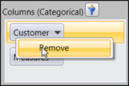
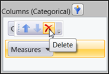

There are two ways to remove an element form the axis.
1. Through the context menu of the element
2. Through the popup menu of the element
Context Menu:
By right clicking the element a context menu will appear containing the remove option. By clicking the remove option that element will be removed from the axis and the current report.

Figure 32: Removing element through Context Menu

Figure 33: Removing through Popup
Popup Menu:
We can remove the element by clicking the Delete menu in the popup, which will appear when we place the mouse over the element.